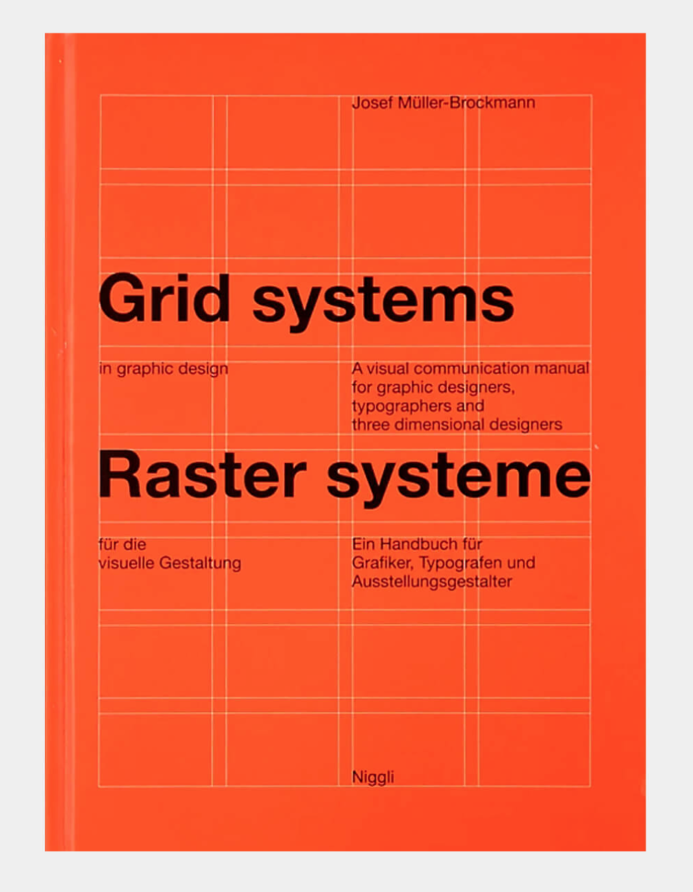
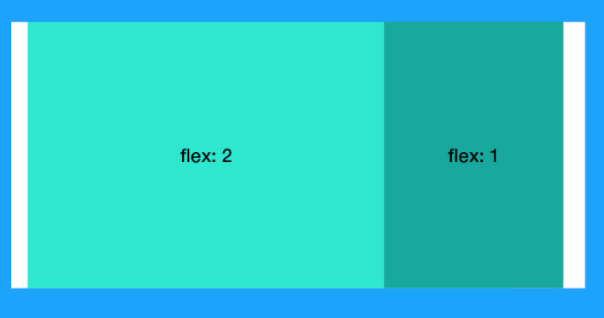
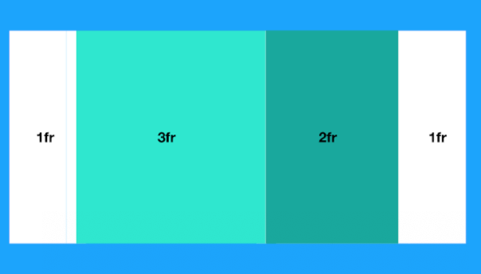

The web is ready for a great graphic designer.
by Hidde de Vries
Hidde de Vries is a front-end developer who works at the World Wide Web Consortium (W3C). W3C is an international community that develops open standards to ensure the long-term growth of the Web. Hidde invents and develops new web techniques that must be available for multiple browsers. As a front-end web developer he specialize in HTML, CSS, JavaScript, living style guides and accessibility for everyone.
Modernism in graphic design
Where function is above form (beauty). And Asymmetric alignment is effective. Each problem has its own solution. Modernism is pretty rule-based, like the web, and it is a movement that responded to industrialisation.
Inspiration for current web design comes from Modernism. Websites nowadays look a lot alike. It feels like everyone uses the same template. That's why I regret that we almost always don't dare to design something outside of that fixed template. The web is a responsive medium and there is so much more we can do with it. Logos are a good example of how we design nowadays, many companies used to use graceful letters, now they have often become simple letters. Jan Tschichold ( one of the great modernist graphic designers) wrote the book: De Neue typography. Shows that by making effective use of different letter weights and sizes, the information could be transferred quickly and easily.
Grid and flexbox
Why is using grids effective?
Müller-Brockmann explains in his book over grids why we'd want grids in the first place. He explains that if you have a bunch of content that needs to go into a layout, a grid can give solutions that are functional, logical, and just look better. When a grid is applied to it, a surface can more easily be organised in a way that is rational.
Something that we see the great graphic designers do a lot, is to use mathematical proportions to lay things out. Both flexbox and Grid Layout let us do this. Neither is better than the other. Flexbox lets us layout things from items, Grid Layout from the container.
.container{
display: flex;
}
.item-1{
flex: 2;
}
.item-2 {
flex: 1;
}

.container{
display: grid;
grid-template-columns: 1fr, 3fr, 2fr, 1fr;.
}

Take away
-
Leave maths to the browser.
For examples:
.container{
display: flex;
}
.item-1{
flex: 2;
}
.item-2 {
flex: 1;
}
.container{
display: grid;
grid-template-columns: 1fr, 3fr, 2fr, 1fr;.
}
- Use vh and vw units so you can design for each device screen.
- Use z-index to overlap the content.
- Check of the browser supports grid don't forget to write a fallback style for the browser that does not supports grid and your fallback has to be as simple as possible
@supports(display: grid){
body {
display: grid
}
}
- Consulting is better than having bugs.
- Stick to the standards of the web.
-
Embrace the flexibility of the web.
For example:
- 50c which means 50 characters
- minmax(... , ...) between two values - The web is interactive so make use of it.